23 + 58[1] 81Bioestadística Fundamental y Estadística Fundamental para las Ciencias de la Salud
En este módulo se introduce el lenguaje R y el entorno RStudio, herramientas fundamentales para el análisis estadístico y la programación en diferentes campos de la ciencia. El propósito es guiar al estudiante en la descarga, instalación y configuración del software, así como en la exploración de su interfaz y sus principales funcionalidades.
A lo largo del módulo se abordan los siguientes aspectos:
Conceptos básicos de programación y su importancia en el razonamiento lógico y científico.
Historia y características de R, sus ventajas frente a otros softwares y el papel de la comunidad que lo respalda.
Exploración de RStudio, sus paneles y atajos más importantes para facilitar el trabajo diario.
Operaciones básicas en R: desde cálculos simples hasta la creación de objetos, variables y estructuras de datos como vectores, matrices, data frames y listas.
Tipos de datos en R y funciones esenciales para su manipulación y verificación.
Instalación y uso de paquetes, indispensables para ampliar las capacidades de R en análisis estadístico y programación avanzada.
Alternativas a RStudio y plataformas en la nube (Posit Cloud, Google Colab, VS Code).
Este módulo busca que el estudiante adquiera autonomía en el uso del software, desarrolle confianza en la escritura de código y esté preparado para avanzar en los siguientes contenidos del curso.
El proceso de programación, como lo define Hadley Wickham, Chief Scientist en Posit y líder del equipo de tidyverse, en su libro R for Data Science, consta de las siguientes etapas:

Saber programar no implica necesariamente memorizar las librerías y funciones de Python, R, C++, etc., ni te lo garantiza realizar cursos en los que copies y pegues código para ver la salida de estos. Programar involucra un proceso de razonamiento, que, de desarrollarse permitirá al usuario desenvolverse en diversos escenarios, para diferentes retos y en distintos programas. Este proceso, contrario a lo que se cree tiene como propósito ser útil, ameno, replicable y funcionar como una herramienta desarrollada para facilitar procesos y producir nuevo conocimiento.
“Programs must be written for people to read, and only incidentally for machines to execute.”
— Hal Abelson
Programar no se reduce a solucionar un problema a través de código, también es la documentación de cómo este fue resuelto para que las personas interesadas puedan entender el camino que se siguió. Hardley, lo define bajo los siguientes principios: estar centrado en el ser humano, ser coherente, componible e inclusivo. Los mismos que componen el universo Tidyverse, colección de paquetes en R que veremos más adelante.
R fue creado a principios de la década de 1990 por los estadísticos de la Universidad de Auckland, Ross Ihaka y Robert Gentleman. Por si alguno de ustedes se lo preguntaba, sí, el lenguaje se llama R por ser la inicial de ambos nombres de los autores.
R es un lenguaje de programación de uso libre con una gran comunidad a nivel mundial. La cual al ser activa mantiene a R en constante renovación y actualización, esto lo hace un software poderoso y versátil. Al momento de escribir este material vamos en la versión 4.4.1 “Race for Your Life”
Es un programa gratuito, multiplataforma, con extensa documentación como soporte a sus numerosos métodos, funciones y tecnología que crece todos los días. Permite realizar investigación reproducible y la posibilidad de programar un proyecto de diversas maneras.
R nos permite hacer análisis de cálculo estadístico y graficación.
Ningún lenguaje de programación es mejor que otro, cada uno tiene sus puntos fuertes y es utíl en escenarios particulares. En ocasiones nos será mas ventajoso trabajar con los datos desde Excel, sin embargo este curso se desarrollara en su basta mayoría a través de R, más precisamente, RStudio.
Podemos usar el lenguaje de programación R a través de diferentes servicios, algunos de instalación local y otros a los que podremos acceder de manera gratuita a través de internet.
Existen alternativas a Rstudio como lo son Visual Studio Code y Google Colab por medio de los cuales podemos programar con código R pero sin la posibilidad de aprovechar los beneficios y funciones de la aplicación RStudio.
Algunas de las alternativas más comunes son:
| Cloud-based solution | Softwares |
|---|---|
| Posit Cloud | RStudio Desktop |
| Google Colab | Visual Studio Code |
Existen alternativas a Rstudio como lo vemos en la anterior tabla, por medio de los cuales podemos programar en código R pero sin la posibilidad de aprovechar los beneficios y funciones de la aplicación RStudio mencionados previamente.
Algunas de las características más relevantes de cada uno se listan a continuación:
Posit Cloud: Posit Cloud es una solución basada en la nube que le permite acceder al potente conjunto de herramientas de ciencia de datos de Posit directamente desde su navegador, sin necesidad de instalaciones ni configuraciones complejas.
Acceso a través de: Posit Cloud Website
Google Colab: Colab es un servicio alojado de Jupyter Notebook que no requiere configuración y proporciona acceso gratuito a recursos informáticos, incluidas GPU y TPU. Colab es especialmente adecuado para el aprendizaje automático, la ciencia de datos y la educación.
Acceso a través de: Colab Website
Visual Studio Code: VS Code es un editor de código fuente ligero pero eficaz desarrollado por Microsoft que se ejecuta en el escritorio y está disponible para Windows, macOS y Linux. Incluye compatibilidad integrada con JavaScript, TypeScript y Node.js, y cuenta con un amplio ecosistema de extensiones para otros lenguajes y entornos de ejecución.
Acceso a través de: Download Visual Studio
RStudio Desktop: es un entorno de desarrollo integrado (IDE) diseñado para ayudarle a ser más productivo en su trabajo diario de ciencia de datos. En otras palabras, es la herramienta que nos permitirá programar en lenguaje R, la interfaz y el vehículo de nuestro análisis. Ademas del análisis ya mencionado, permite la integración de otros lenguajes de programación y la consolidación de documentos, presentaciones, aplicaciones, libros, entre otras más.
Para dar inicio al proceso de instalación de R y RStudio Desktop, será redirigido a la página web oficial dando click aquí, allí encontrará la posibilidad de descargar ambos archivos. Para el caso de R, irá directamente al enlace de la Red Completa de Archivos R (CRAN) en la cual podrá iniciar la descarga una vez seleccione el link correspondiente a su sistema base. Posterior a la descarga deberá abrir este archivo con el cual iniciará la instalación de esta nueva aplicación de manera similar, se realizará la descarga de la aplicación RStudio dependiendo del sistema operativo.
Una vez iniciado el proceso de instalación de R, notara la aparición de recuadros con información relacionada a la carpeta en que se instalará el programa y una serie de configuraciones las cuales se muestran a continuación y se recomienda dejar de manera predeterminada por la empresa.
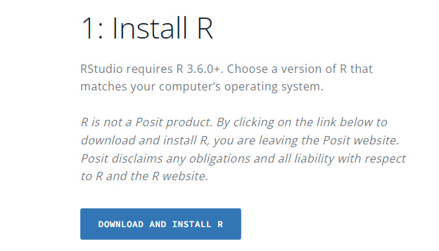
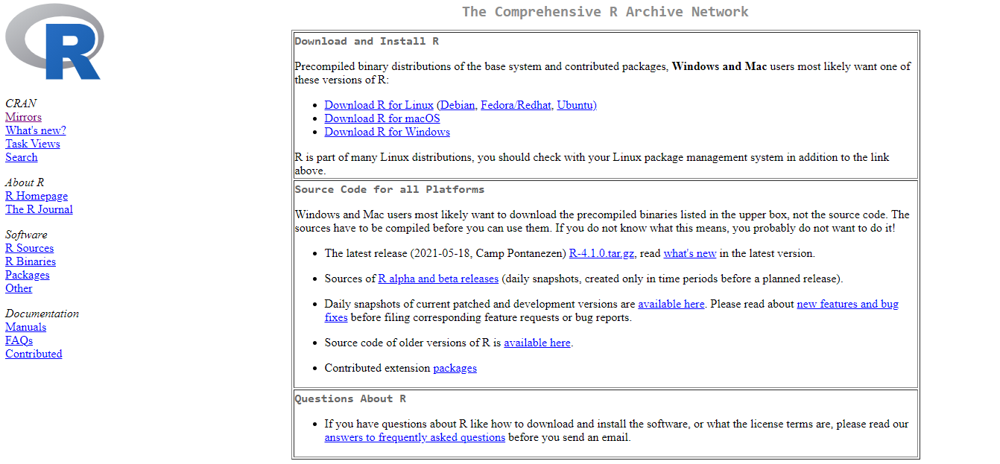
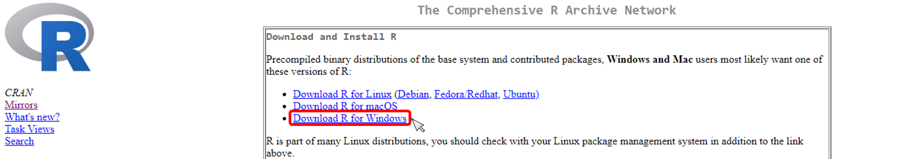
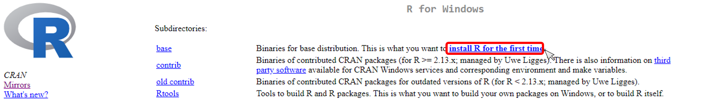
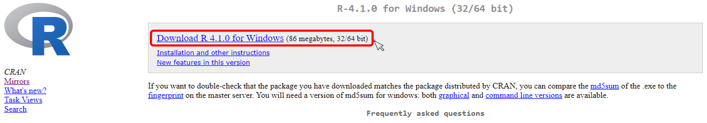
Tras ejecutar el archivo descargado, lo primero que aparecerá será una ventana que permitirá elegir el idioma a utilizar durante la instalación. Para este manual utilizaremos “Español”.
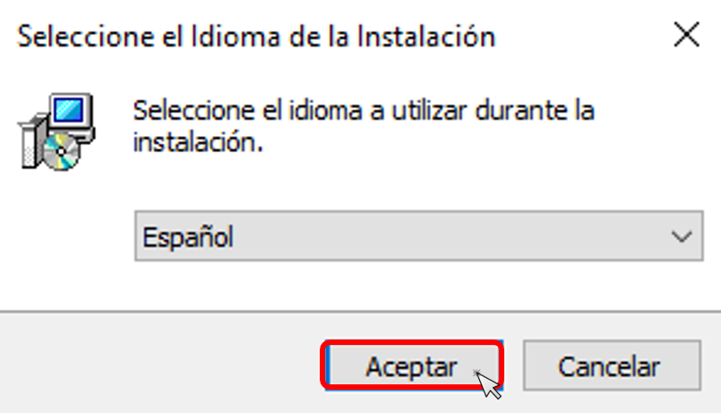
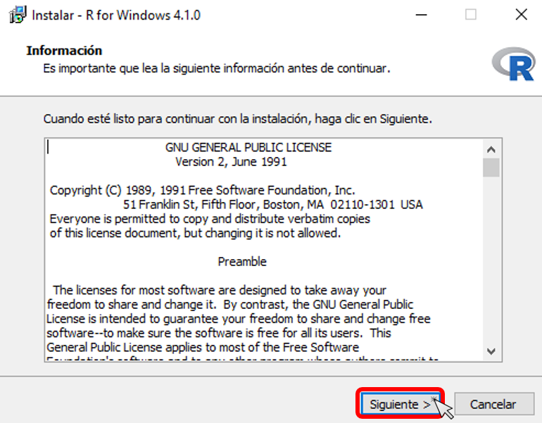
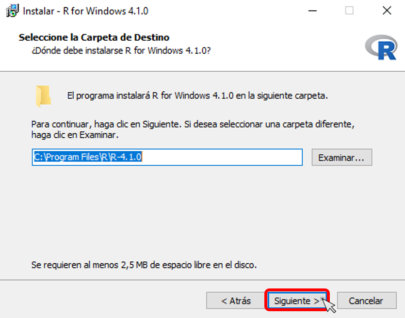
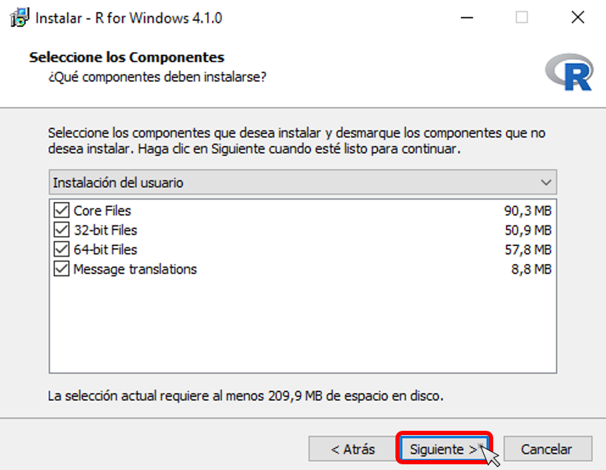
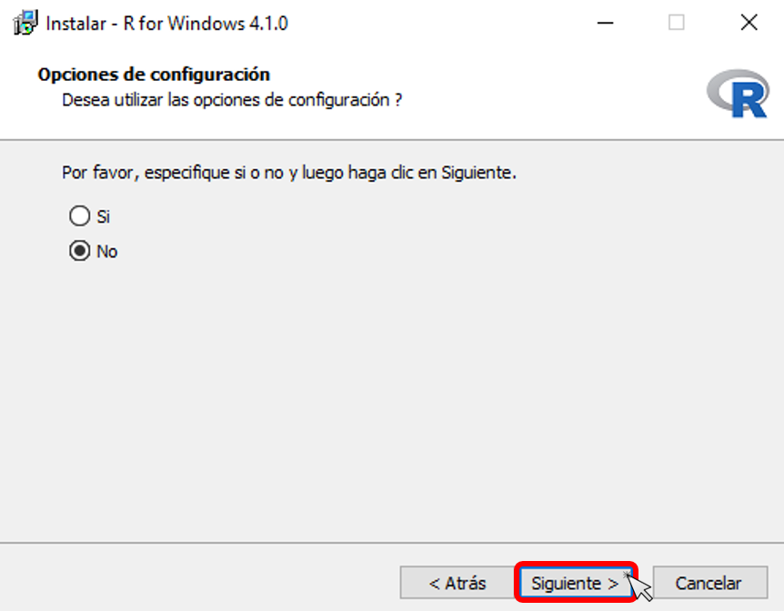
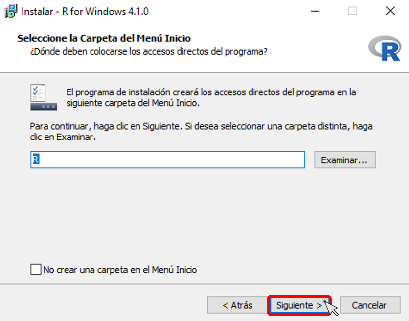
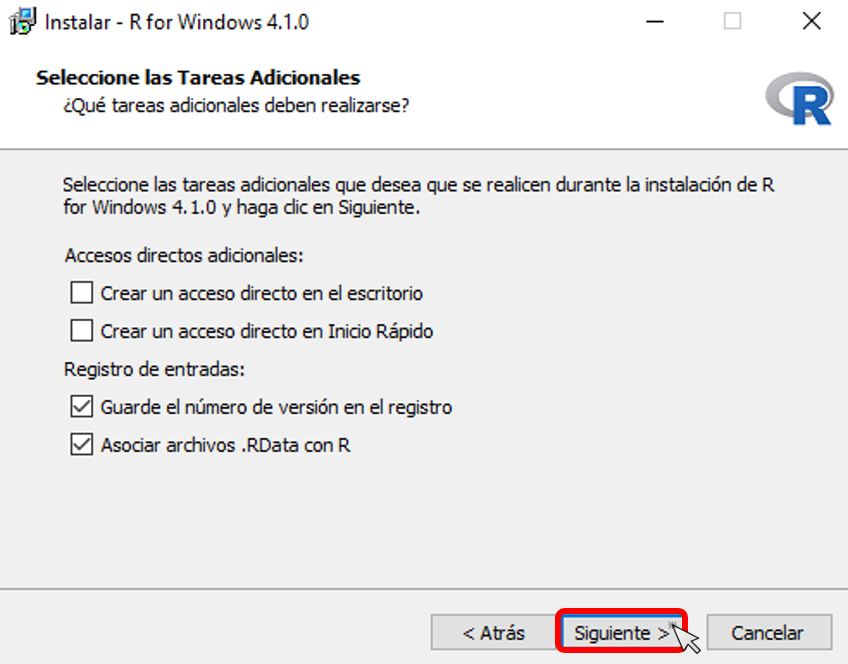
Una vez termines todos los pasos descritos anteriormente, da clic en la opción Finalizar y ya estarás listo para continuar con la instalación de la interfaz gráfica RStudio.
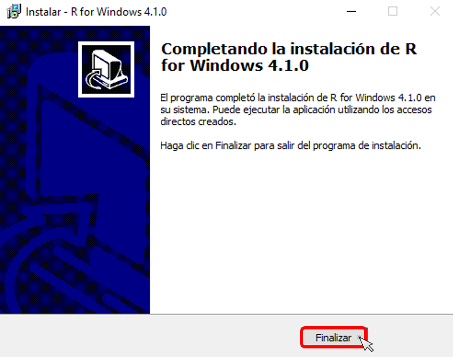
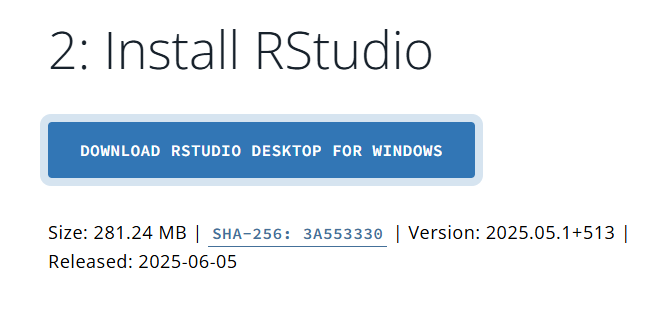
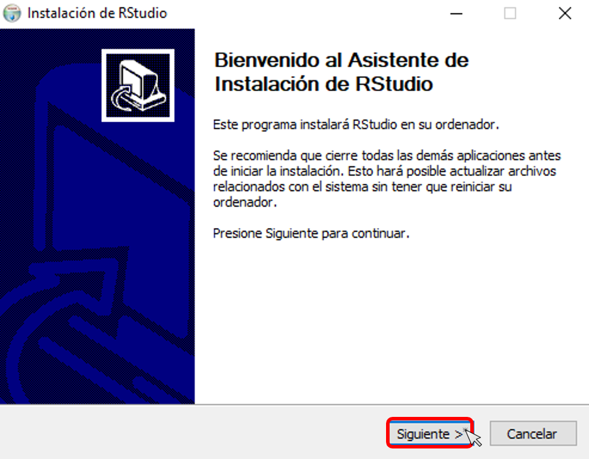
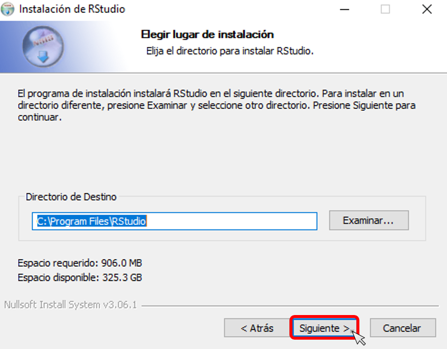
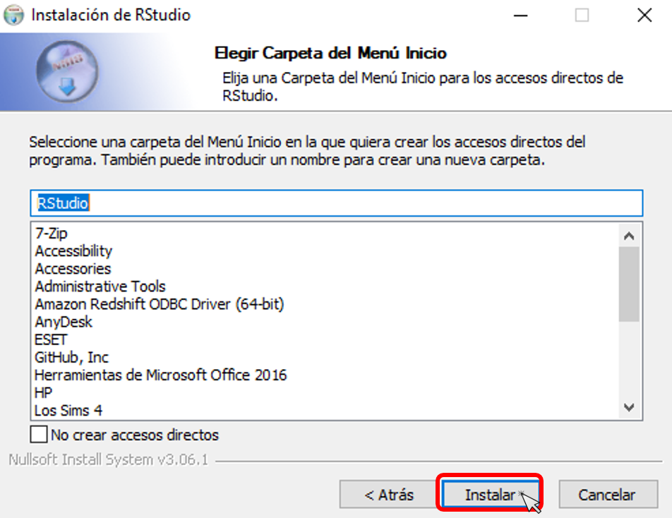
Una vez abierta la aplicación Rstudio evidenciará la siguiente ventana:

A continuación se dará una breve explicación de las características de cada panel:
Source (fuente): Es el espacio para escribir un nuevo script, crear un nuevo documento o cargar uno guardado previamente en nuestra computadora. En este cuadrante podemos seleccionar una o varias líneas de código para ejecutarlas.
Console (consola): El panel de consola proporciona un área para ejecutar código de forma interactiva. Por defecto está vinculado a R, pero también puede proporcionar una consola Python si lo requieres.
Enviroments (ambientes): contiene las pestañas Environment, donde se almacenan los datos, valores y funciones definidas History, Connections, en caso de enlazar la sesión a algún servidor, Build, VCS, y Tutorial
Output (salida): contiene las pestañas Files, Plots, Packages, Help, Viewer, y Presentation.
Nos concentraremos principalmente en el panel de Source en el cual crearemos un nuevo documento, un R script, en el cual iremos consignando nuestras primeras lineas de código.
Por otra parte, piensa en el panel de Console el cual hará las veces de calculadora y será la herramienta por medio de la cual ejecutaremos nuestro código. Podremos hacer cuentas rápidas o realizar operaciones de todo tipo pero ten en cuenta que estas no se guardarán.
El R Script será nuestro documento y la Consola nuestra hoja de notas y desarrollos. El R Script será nuestra ruta de procedimientos e instrucciones a R que nos mostrará los resultados que le solicitemos por medio de la Consola.
En el Enviroment podremos ver los objetos guardados, veremos como en ocasiones será de utilidad guardar objetos allí para usarlos en el desarrollo de nuestras tareas.
¿Sabías que R es un lenguaje de programación orientada a objetos? R es un lenguaje orientado a objetos, lo que significa que trabaja con estructuras llamadas objetos que agrupan datos y funciones. Por ejemplo, cuando creas un conjunto de datos, una gráfica o un modelo, estás creando un objeto. Cada objeto tiene propiedades (atributos) y puede ser manipulado con funciones específicas. Esto hace que R sea muy flexible y te permita organizar tu trabajo de forma clara y reutilizable.
Como mencionamos anteriormente, uno de los usos mas básicos que podemos aprovechar de R es usarlo como una calculadora. Desde operaciones elementales hasta algo un poco más avanzado. Ten en cuenta que no podremos ver los pasos para resolver la operación, función que no está integrada en este software como sí lo está en Wolfram Mathematica.
En R, cuando tenemos varias operaciones ocurriendo al mismo tiempo, en realidad, algunas de ellas son realizadas antes que otras y el resultado de ellas dependerá de este orden. Este orden sigue la jerarquía matemática estándar, aritméticas, relacionales, lógicas y de asignación.
| Orden | Operadores | Simbolo |
|---|---|---|
| 1 | Paréntesis (Corchetes) | () , [] |
| 2 | Exponentes | ^ |
| 3 | Multiplicación y División | * , / |
| 4 | Suma o Resta | + , - |
| 5 | Relacionales | < , <= , > , >= , == , != |
| 6 | Lógicos | ! , & , | |
| 7 | Asignación | <- |
Iniciemos realizando una operación básica en la consola, realicemos la suma entre 23 y 58.
23 + 58[1] 81Guardemos ese resultado, definiendo que el total es igual a esta suma
total = 23 + 58Multipiquemos el resultado por 3
total * 3[1] 243Detrás de este proceso lo que realizamos fue, una suma de dos números enteros, creamos un objeto llamado total en el que almacenamos la suma, luego llamamos ese objeto de total y lo usamos como una forma abreviada para realizar el producto.
Cuando creamos un objeto usualmente utilizamos el signo = o el símbolo <-. Tenga en cuenta que hay palabras que no pueden ser utilizadas a la hora de crear un objeto, estas son de uso exclusivo para funciones y algunas se muestran a continuación:
Reserved Words:
if , else , repeat , while , fuction , for , in , next , break , TRUE , FALSE , NULL , Inf , NaN , NA .
Además, tenga en cuenta que para los nombres definidos para las variables:
Un nombre de variable debe empezar por una letra y puede ser una combinación de letras, dígitos, punto(.) y guión bajo(_). Si empieza por punto(.), no puede ir seguido de un dígito.
Un nombre de variable no puede empezar por un número ni por un guión bajo (_).
Los nombres de las variables distinguen entre mayúsculas y minúsculas (age, Age y AGE son tres variables diferentes)
| Tipo | Descripción | Ejemplo |
|---|---|---|
numeric |
Números reales (decimales o enteros) | 3.14, -2 |
integer |
Números enteros | 2L, -5L |
character |
Cadenas de texto | "Estadística" |
logical |
Valores lógicos | TRUE, FALSE |
complex |
Números complejos | 1 + 2i |
NA |
Dato faltante o no disponible | NA |
Para averiguar el tipo de dato, podemos usar las siguientes funciones typeof(x), class(x) y str(x). Para confirmar un tipo de dato también podemos usar is.na(x), is.numeric(x), is.character .
a<-pi
a[1] 3.141593b<--2
b[1] -2c<-"Estadística"
c[1] "Estadística"d<-2==3
d[1] FALSEe<-1+5i
e[1] 1+5iPara averiguar el tipo de dato, podemos usar las siguientes funciones typeof(x), class(x) y str(x). Para confirmar un tipo de dato también podemos usar is.na(x), is.numeric(x), is.character.
En R, no es lo mismo un número algebraico entero a un tipo de dato entero. Los números enteros como lo son 0, -2, 8, 400, -26 son un ejemplo de tipo de datos numéricos en R. Sin embargo, los tipos de datos enteros los encontramos, por ejemplo, al consultar length(x) las dimensiones de las estructuras de datos son un claro ejemplo de tipo de dato entero.
Existen formas más complejas de almacenar datos, estas son por ejemplo, vectores, matrices, dataframes y listas, este último es bastante versátil pues permite almacenar objetos y estructuras de diferentes clases.
| Estructura | Descripción | Ejemplo |
|---|---|---|
vector |
Secuencia de elementos del mismo tipo | c(1, 2, 3) |
matrix |
Arreglo bidimensional con elementos del mismo tipo | matrix(1:4, nrow = 2) |
array |
Arreglo multidimensional | array(1:8, dim = c(2,2,2)) |
list |
Contenedor de elementos de diferentes tipos | list(1, "a", TRUE) |
data.frame |
Tabla de datos con columnas de tipos distintos | data.frame(x = 1:3, y = c("a", "b", "c")) |
factor |
Variable categórica con niveles | factor(c("alto", "bajo", "medio")) |
tibble |
Versión moderna de data.frame del paquete tibble |
tibble(x = 1:3, y = letters[1:3]) |
Los vectores y matrices son arreglos de más de una dimensión \(n\)x\(1\) o \(n\)x\(m\), respectivamente, estos pueden contener datos de texto, numéricos y lógicos, entre otros. Las siguientes son diversas formas de crear vectores
c(1,2,3)[1] 1 2 3y<-c(0:10)
y [1] 0 1 2 3 4 5 6 7 8 9 10x<-c(seq(from=0,to=100,by=10))
x [1] 0 10 20 30 40 50 60 70 80 90 100c(rep("a,b",times=5))[1] "a,b" "a,b" "a,b" "a,b" "a,b"En R el producto punto entre vectores se realiza usando el comando %*% asegurándonos de que las dimensiones coincidan (usamos t() para transponer), por otro lado la suma y el producto entre vectores se realiza elemento a elemento, de esta forma también está definida la división entre vectores, ya que se realiza elemento a elemento. Podemos acceder a partes específicas de un vector según su posición, concatenar vectores y apilarlos vectores de forma vertical cbind() y horizontal rbind().
x+y [1] 0 11 22 33 44 55 66 77 88 99 110x*y [1] 0 10 40 90 160 250 360 490 640 810 10002*x [1] 0 20 40 60 80 100 120 140 160 180 200y/x [1] NaN 0.1 0.1 0.1 0.1 0.1 0.1 0.1 0.1 0.1 0.1x%*%t(y) [,1] [,2] [,3] [,4] [,5] [,6] [,7] [,8] [,9] [,10] [,11]
[1,] 0 0 0 0 0 0 0 0 0 0 0
[2,] 0 10 20 30 40 50 60 70 80 90 100
[3,] 0 20 40 60 80 100 120 140 160 180 200
[4,] 0 30 60 90 120 150 180 210 240 270 300
[5,] 0 40 80 120 160 200 240 280 320 360 400
[6,] 0 50 100 150 200 250 300 350 400 450 500
[7,] 0 60 120 180 240 300 360 420 480 540 600
[8,] 0 70 140 210 280 350 420 490 560 630 700
[9,] 0 80 160 240 320 400 480 560 640 720 800
[10,] 0 90 180 270 360 450 540 630 720 810 900
[11,] 0 100 200 300 400 500 600 700 800 900 1000t(x)%*%y [,1]
[1,] 3850x[3][1] 20cbind(x,y) x y
[1,] 0 0
[2,] 10 1
[3,] 20 2
[4,] 30 3
[5,] 40 4
[6,] 50 5
[7,] 60 6
[8,] 70 7
[9,] 80 8
[10,] 90 9
[11,] 100 10rbind(x,y) [,1] [,2] [,3] [,4] [,5] [,6] [,7] [,8] [,9] [,10] [,11]
x 0 10 20 30 40 50 60 70 80 90 100
y 0 1 2 3 4 5 6 7 8 9 10c(x,y) [1] 0 10 20 30 40 50 60 70 80 90 100 0 1 2 3 4 5 6 7
[20] 8 9 10A<-matrix(1:9, nrow = 3)
A [,1] [,2] [,3]
[1,] 1 4 7
[2,] 2 5 8
[3,] 3 6 9B<-diag(c(1:3))
B [,1] [,2] [,3]
[1,] 1 0 0
[2,] 0 2 0
[3,] 0 0 3matrix(NA, ncol = 3,nrow = 2) [,1] [,2] [,3]
[1,] NA NA NA
[2,] NA NA NALa suma y el producto de matrices se realiza elemento a elemento, se usa el comando %*% para calcular el producto usual entre matrices siempre las dimensiones sean las correctas, usamos solve() para calcular la inversa siempre que la matriz sea no singular, para calcular la traspuesta de una matriz escribimos t(x), si se quiere extraer la diagonal usamos diag(), para el cálculo de el determinante se usa det(). De forma similar a los vectores, podemos acceder a las filas, columnas y entradas de una matriz y unirlas vertical u horizontalmente.
A+B [,1] [,2] [,3]
[1,] 2 4 7
[2,] 2 7 8
[3,] 3 6 12A*B [,1] [,2] [,3]
[1,] 1 0 0
[2,] 0 10 0
[3,] 0 0 27A%*%B [,1] [,2] [,3]
[1,] 1 8 21
[2,] 2 10 24
[3,] 3 12 27solve(B) [,1] [,2] [,3]
[1,] 1 0.0 0.0000000
[2,] 0 0.5 0.0000000
[3,] 0 0.0 0.3333333diag(A)[1] 1 5 9det(B)[1] 6A[,1][1] 1 2 3B[1,][1] 1 0 0B[c(1,2),c(2,3)] [,1] [,2]
[1,] 0 0
[2,] 2 0cbind(A,B) [,1] [,2] [,3] [,4] [,5] [,6]
[1,] 1 4 7 1 0 0
[2,] 2 5 8 0 2 0
[3,] 3 6 9 0 0 3rbind(A,B) [,1] [,2] [,3]
[1,] 1 4 7
[2,] 2 5 8
[3,] 3 6 9
[4,] 1 0 0
[5,] 0 2 0
[6,] 0 0 3Los dataframes son conjuntos de datos de dimensión \(n\)x\(m\), estos pueden contener diferentes variables, usualmente ubicadas por columna, así como mezclar diferentes tipos de datos, pueden ser exportadas y estar en diversos formatos como .xlsx,.csv,.txt entre otros, o ser cargadas o creadas directamente desde R.
| Comando | Espacio | Función |
|---|---|---|
| ⬆️ | Consola | Volver a mostrar los códigos anteriores |
| Ctrl + L | Consola | Limpiar Consola |
| Ctrl + Enter | Script | Correr línea de código |
| Ctrl + Alt + R | Script | Correr todo |
| Ctrl + S | Script | Guardar |
| Ctrl + F | Script | Guardar |
| # | Script | Insertar algún comentario en el código |
| Función | Descripción |
|---|---|
| getwd() | Devuelve la dirección del documento en el directorio de trabajo actual del proceso R |
| setwd() | Definir una dirección del directorio de trabajo para la sesión actual |
| rm(object) | Eliminar del Enviroment algún elemento guardado, como value, dataframe, function, etc. |
| rm(list=ls()) | Eliminar todos los elementos del Enviroment |
| keepit <- c(“data1”, “data2”) rm(list = setdiff(ls(), keepit)) | En caso de desear mantener solo unos objetos y eliminar el resto |
| rm(list = setdiff(ls(), c(“database_1”, “database_2”))) | Eliminar todos los objetos del enviroment menos los especificados |
| gc() | Liberar RAM |
En caso de querer guardar un objeto creado de cualquier tipo se recomiendan las siguientes funciones:
# Para Guardar el Objeto en formato .rds
saveRDS(mi_df, "file_folder/datos_limpios.mi_df")
# Para volver a cargar mi objeto
mi_df <- readRDS("file_folder/datos_limpios.mi_df")
# Para guardar varios objetos en formato .RData
save(df, diccionario_var, plot1, file= here("data_clean", "base2.RData"))
load(here("data_clean", "base2.RData"))La función here del paquete del mismo nombre es útil para tener mas control y especificar un folder file del directorio de trabajo en el que se este trabajando.
Packages) y las librerías (Libraries) y por qué son tan importantes?Si bien hasta este punto no hemos requerido la instalación de ningún paquete, serán indispensables a la hora de necesitar funciones y procedimientos que no vengan incluidos en la base de R. Por defecto, R nos proporciona lo suficiente para aprovechar las ventajas de este lenguaje. nos permite realizar operaciones entre objetos de diferente tipo, cargar datos como veremos en el siguiente modulo, realizar consultas de estos y usar una gran cantidad de funciones matemáticas y estadísticas. Sin embargo, ya veremos que en ocasiones esto no es suficiente y con el propósito de realizar operaciones más avanzadas, optimizar procesos al interior del programa o usar repositorios y datos ya consolidados, será de gran utilidad y nos facilitará gran parte del trabajo aprender a usar estas dependencias externas.
En R los comando para realizar la instalación de un determinado paquete, son:
install.packages(“Boruta”) # Esta instalación se realiza por única vez en el software.
Una vez realizada la instalación, cada que queramos utilizar las funciones de este paquete, llamaremos la librería al inicio del documento o en la sección anterior a usar alguna de sus funciones, por medio de la siguiente instrucción:
library(Boruta) # En cada script que deseemos usar alguna de las funciones de esta librería.
Un análogo a este procedimiento sería en python cuando definimos:
pip install tensorflow
import tensorflow as tf
Instalación y Configuración de RStudio y R
Exploración de la interfaz y atajos
Ctrl + Enter para ejecutar una línea, Ctrl + S para guardar, Alt + - para insertar el operador de asignación <-).exploracion_atajos.R.Operaciones básicas y tipos de datos
integer), un número decimal (numeric), una cadena de texto (character) y un valor lógico (logical).paste().class() para verificar el tipo de dato de cada variable y muestra los resultados en la consola.Estructuras de datos
c(1, 2, 3)).vector[2] o lista[[1]]).Uso de una función básica y paquetes
install.packages("dplyr") y cárgalo con library(dplyr) .Guardar y cargar datos
RData usando la función save()..RData con load().print()).En caso de obtener algún mensaje de error (warnings) en la consola, verifica a qué se pudo deber, investígalo y corrígelo hasta obtener una salida esperada. Recuerda que si no estas seguro de cómo implementar alguna función puedes utilizar el comando ?help en la consola para acceder a la ayuda en la que encontrarás la documentación de paquetes y funciones implementadas en R.
Copyright © 2025 Jose Miguel Leon - Created with Quarto